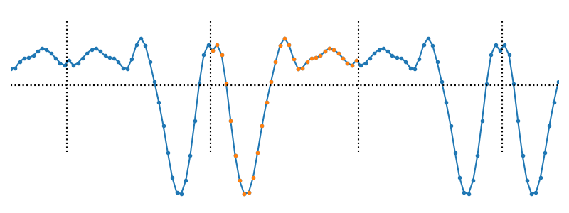
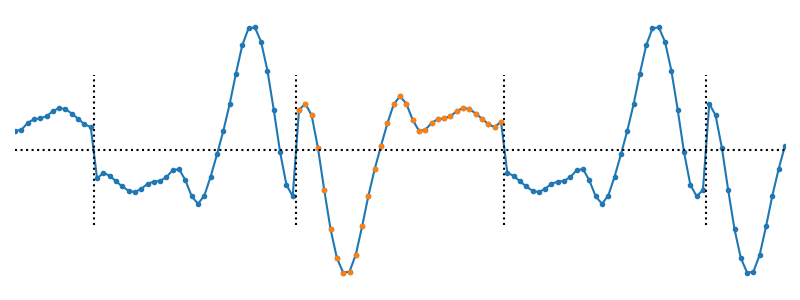
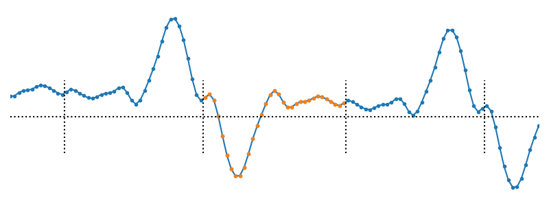
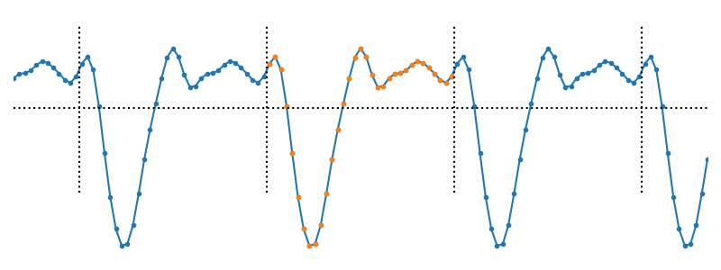
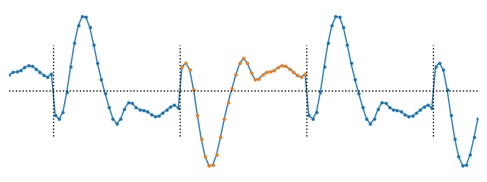
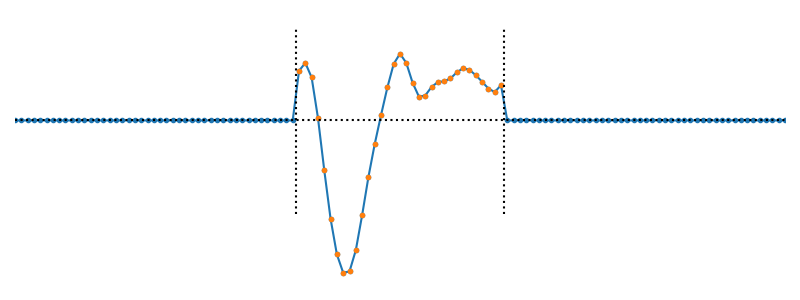
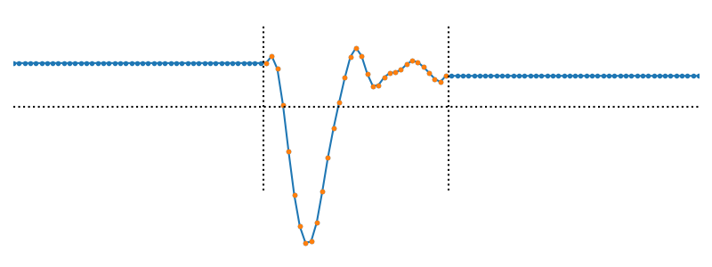
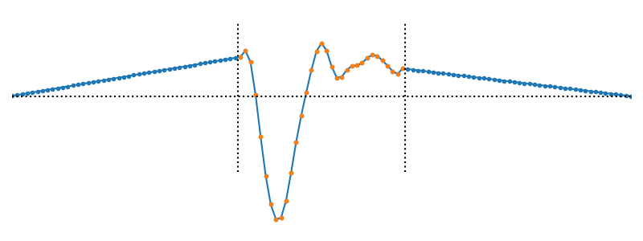
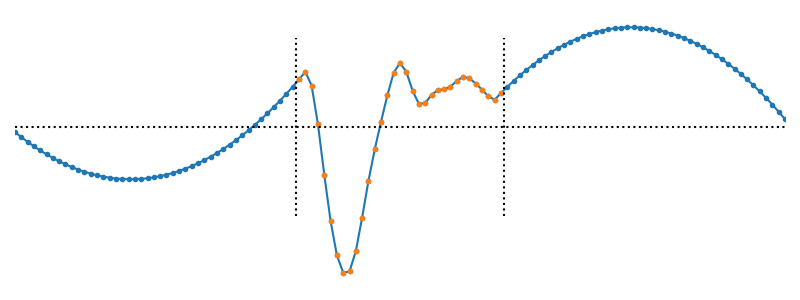
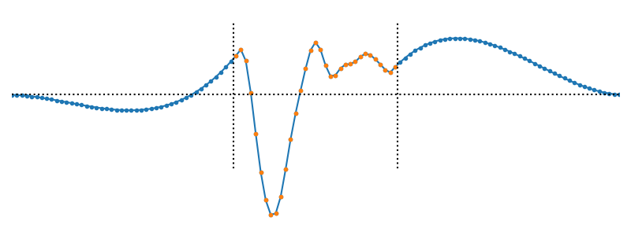

Assorted concepts used in DIPlib 3
Contents
This page describes assorted concepts used in DIPlib 3.
Connectivity
Traditionally, neighborhood connectivity is given as 4 or 8 in a 2D image, 6, 18 or 26 in a 3D image, etc. These numbers indicate the number of neighbors one obtains when using the given connectivity. Since this way of indicating connectivity does not naturally lead to dimensionality-independent code, DIPlib uses the distance to the neighbors in city-block distance instead (the L1 norm). Thus, the connectivity is a number between 1 and N, where N is the image dimensionality. For example, in a 2D image, a connectivity of 1 leads to 4 nearest neighbors (the edge neighbors), and a connectivity of 2 leads to 8 nearest neighbors (the edge and vertex neighbors).
We use negative values for connectivity in some algorithms, in e.g. the binary dilation.
These indicate alternating connectivities, which leads to more isotropic shapes than
using the same connectivity for all iterations. These alternating connectivities are
available only if the function takes a dip::sint as connectivity parameter.
In terms of the classical connectivity denominations we have, in 2D:
| Connectivity | Classical denominations | Structuring element shape |
|---|---|---|
| 1 | 4 connectivity | diamond |
| 2 | 8 connectivity | square |
| -1 | 4-8 connectivity | octagon |
| -2 | 8-4 connectivity | octagon |
And in 3D:
| Connectivity | Classical denominations | Structuring element shape |
|---|---|---|
| 1 | 6 connectivity | octahedron |
| 2 | 18 connectivity | cuboctahedron |
| 3 | 26 connectivity | cube |
| -1 | 6-26 connectivity | small rhombicuboctahedron |
| -3 | 26-6 connectivity | small rhombicuboctahedron |
Some functions will interpret a connectivity of 0 to mean the maximum connectivity (i.e. equal to the image dimensionality). This is an easy way to define a default value that changes depending on the image dimensionality.
Boundary Conditions
When computing on images, one usually needs to read data outside the image domain. For example, a filter
with a 7x7 window will need to read up to 3 pixels past the image boundary when computing the output at
pixels inside the image but near the boundary. Most functions will pad (extend) the image, fill in some
meaningful values in the padded areas, and use the result to read from when computing their output. Some
functions will do this explicitly for the entire image, separable filters will do this on one image line
at the time, and some other functions will do this only implicitly. One can use the function
dip::ExtendImage to visualize what the extended image looks like to a filter, or to extend the image
when manually implementing a function that needs to read outside the image bounds.
In DIPlib, we refer to the method used to fill in the padded areas as the boundary condition. DIPlib
knows quite a lot of different boundary conditions, see dip::BoundaryCondition. Here we show what
they do, what the conditions are that are applied to the boundary, and discuss what condition to pick
for some common situations.
The default boundary condition is "mirror". The image data is mirrored at the image boundary, creating
an even function around the boundary pixel. This is the default because it is a reasonable condition
in most situations, and is the recommended boundary condition for low-pass filters and non-linear smoothing
filters. Asymmetric mirror ("asym mirror") does the same thing, but additionally inverts the pixel values,
creating an odd function around the boundary pixel. Note that, for unsigned integer images, this uses
dip::saturated_inv.
The plots below show a 1D signal (an image line) padded using these boundary conditions.

The"mirror" boundary condition

The"asym mirror" boundary condition
Antisymmetric reflect ("antisym reflect") is similar to asymmetric mirror, but reflects the data also
in the intensity axis (the y axis in the plot below). This causes the gradient to be equal on both
sides of the boundary pixel. This is a good boundary condition to use when computing derivatives.
Note that for integer types, this boundary condition can lead to values outside the input range, which
will be clipped to the range. Note also that this boundary condition is noise-sensitive, as the one
pixel at the edge affects all the padded pixels.

The"antisym reflect" boundary condition
The periodic boundary condition simply repeats the image, as if one enters the domain on one side when exiting it on the other, like in pac-man. For a 2D image, this corresponds to wrapping the image onto a toroidal geometry. The Discrete Fourier Transform implicitly uses this boundary condition, other filters can use it too to mimic a filter applied in the discrete Fourier domain. The asymmetric periodic condition additionally inverts the pixel values.

The"periodic" boundary condition

The"asym periodic" boundary condition
Three trivial conditions simply set the values outside the image to a specific value, either zero ("add zeros"),
the maximum value for the data type ("add max"), or the minimum value for the data type ("add min").
Padding with zeros is useful for example in the case of normalized convolution (where it’s the default), when extending the Fourier transform of an image, and in many cases for geometric transformations (it’s the default also for rotation).
Padding with the maximum value is useful in the morphological erosion (dip::Erosion), and with the minimum
value for dilation (dip::Dilation).

The"add zeros" boundary condition
To impose a boundary condition that is a constant other than 0, min or max, subtract the desired value from
the image, apply the operation with the boundary condition "add zeros", then add that value back to the image.
This might require converting the image to a signed type for the initial subtraction to do the right thing.
For example, to use a value of 100 as the constant boundary condition:
int bc = 100; dip::Image img = dip::ImageRead("examples/cameraman.tif"); dip::Image rotated = img - bc; // Note that the result here is single float rotated = dip::Rotation2D(rotated, dip::pi/4, "", "add zeros"); rotated += bc; rotated.Convert(dip::DT_UINT8);
The last four boundary conditions extrapolate based on one or two pixels at the boundary. They
establish a polygon with increasing order. All of these are very noise sensitive, and the higher
the order, the more sensitive they are. The zero and first order extrapolation use only one boundary
pixel. "zero order" simply replicates this one value out. "first order" fits a first order
polynomial between this pixel and the end of the padding area, where it reaches zero. The
second and third order extrapolation use two boundary pixels, fitting a second and third order
polynomial that also reach zero at the end of the padding area. The third order extrapolation
reaches zero with a zero gradient. Do not use these higher order extrapolation modes with
noisy data.

The"zero order" boundary condition

The"first order" boundary condition

The"second order" boundary condition

The"third order" boundary condition
Handling input and output images that alias each other
Many of the old DIPlib 2 functions (the ones that cannot work
in-place) used a function dip_ImagesSeparate() to create temporary images
when output images are also input images. The resource handler takes
care of moving the data blocks from the temporary images to the output
images when the function ends. With the current design of shared pointers
to the data, this is no longer necessary. Say a function is called with
dip::Image A; dip::Filter( A, A, params );
Then the function dip::Filter() does this:
void dip::Filter( const dip::Image &in_c, dip::Image &out, ... ) { Image in = in_c.QuickCopy(); out.Strip(); // do more processing ... }
What happens here is that the new image in is a copy of the input image, A,
pointing at the same data segment. The image out is a reference to image A.
When we strip A, the new image in still points at the original data segment,
which will not be freed until in goes out of scope. Thus, the copy in
preserves the original image data, leaving the output image, actually the
image A in the caller’s space, available for modifying.
However, if out is not stripped, and data is written into it, then in is
changed during processing. So if the function cannot work in place, it should
always test for aliasing of image data, and strip/forge the output image if
necessary:
void dip::Filter( const dip::Image &in_c, dip::Image &out, ... ) { Image in = in_c.QuickCopy(); if( in.Aliases( out )) { out.Strip(); // Force out to not point at data we still need } out.ReForge( ... ); // create new data segment for output // do more processing ... }
Note that the dip::Framework functions take care of this.
Coordinate system origin
Some functions, such as dip::FourierTransform, dip::Rotation and
dip::AffineTransform, use a coordinate system where the origin is a pixel
in the middle of the image. The indices of this pixel are given by
index[ ii ] = img.Size( ii ) / 2. This pixel is exactly in the middle of the
image for odd-sized images, and to the right of the exact middle for
even-sized images.
The function dip::FillCoordinates and related functions can be used to
obtain the coordinates for each pixel. These all have a mode parameter
that determines which coordinate system to use. The value "right" (the
default) places the origin in the same location as dip::FourierTransform,
dip::Rotation, etc.
The function dip::Image::GetCenter (using the default value for its input
argument) returns the coordinates of the central pixel as a floating-point array.
Normal strides
As discussed in Strides, images in DIPlib can be stored in different orders. The stride array specifies how many samples to skip to find the neighboring pixel along each image dimension. Likewise, the tensor stride indicates how many samples to skip to find the value for the next channel of the current pixel. When an image is first forged, the sample ordering is normal, unless an external interface is set (see Define an image’s allocator). Normal strides are defined as follows:
- The tensor stride is set to 1. That is, image channels are interleaved.
- The first dimension’s stride is set to the number of tensor elements. That is, pixels are stored consecutively in memory along the first dimension (x).
- Other image dimension’s strides are set to the previous dimension’s stride times the previous dimension’s size. That is, image rows are stored consecutively without padding, as are image planes, etc.